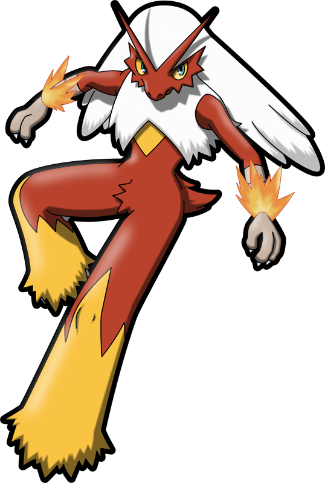

Você tem o poder de construir a vida que deseja, está em suas mãos!
Praticar a gratidão é uma chave importantíssima que pode abrir portas extraordinárias em sua vida.
Correr atrás dos sonhos é um grande desafio nesta vida. Infelizmente vivemos num mundo onde não devemos sequer comentar sobre nossos sonhos com outras pessoas, a não ser que tenhamos certeza que se trata de alguém confiável e leal.
“Enquanto eu viver eu quero brilhar. Quero provar que eu existo. Se eu pudesse, faria alguma coisa verdadeiramente importante, que definitivamente ficaria para o futuro. E assim, se eu desaparecer, eu acredito que tudo que eu consegui iria permanecer. É isso que significa viver, não é mesmo?
- home
- story
- wallpaper
- trailer


